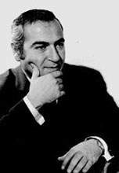

Խաչատուր Ավետիսյան
 Ջիվանու ու Շերամի, Ավետիք Իսահակյանի ու Հովհաննես Շիրազի, Նիկողայոս Տիգրանյանի ու Արմեն Տիգրանյանի փառաբանված հայրենիքում` Շիրակում է ծնվել և որպես երաժիշտ ձևավորվել Խաչատուր Ավետիսյանը: Կոմպոզիտորի, կատարողի, մանկավարժի իր գործունեությամբ նպաստելով ազգայինի առաջխաղացմանը՝ նա ճանաչվել ու սիրվել է հայրենիքում ու սփյուռքում:
Երաժշտության ասպարեզում Խ.Ավետիսյանի առաջին քայլերը խթանեց մոր նուրբ ու հարազատ երգը: Երգին վիճակվեց ապագա երաժշտի կյանքում կենտրոնական տեղ գրավել՝ դաոնալով նրա ստեղծագործության կարևորագույն ոլորտներից մեկը:
Պիոներպալատի ժողովրդական գործիքների անսամբլի գործունեությանը մասնակցելն ուղի հարթեց դեպի Լենինականի ֆիլհարմոնիայի ժողովրդական գործիքների անսամբլ: Կատարելագործվելով որպես կատարող (թառ, քանոն)՝ Խ.Ավետիսյանը փորձնական գործունեությամբ մշտապես հաղորդակցվում էր ժողովրդական և աշուղա-գուսանական երաժշտությանը՝ հանգամանք, որ կանխորոշեց նրա անհատականության գեղարվեստական ուղղվածությունը: Երաժշտության մեջ խորանալու նպատակով Խ.Ավետիսյանը 1949 թվին բնակություն է հաստատում երևանում: Երիտասարդ երաժշտի կյանքի նոր, հեռանկարային էջը բացվում է ուսումնառությամբ Ռ.Մելիքյանի անվան երաժշտական ուսումնարանի՝ Գր.Եդիազարյանի ղեկավարած ստեղծագործական դասարանում: Նա որոշ ժամանակ ուսումը շարունակեց էդ.Բաղդասարյանի մոտ, որի ղեկավարությամբ գրեց իր ավարտական եռամաս Լարային կվարտետը:
Ուսմանը զուգահեռ Ռ.Մելիքյանի անվան երաժշտական ուսումնարանում հանձն առավ քանոնի դասարանի ղեկավարությունը: Դասավանդման ընթացքը քանոնի համար գործերի ստեղծման, երկացանկի հարստացման անհրաժեշտություն առաջ բերեց: Այսպես, մանկավարժական աշխատանքի և կատարողական գործունեության թելադրանքով ստեղծվում են փոխադրումներ, մշակումներ և Առաջին կոնցերտը քանոնի ու կամերային նվագախմբի համար:
Մեծ էր Խ.Ավետիսյան-կատարողի (քանոն) հմայքը Բեռլինում կայացած համաշխարհային փառատոնում (1951): Համընդհանուր բարձր գնահատականը աոաջին մրցանակի ու ոսկե մեդալի տեսք ստացավ: Գրեթե քառասուն երկրներից ժամանած ժողովրդական գործիքներ նվազող երաժիշտների մրցույթում Խ.Ավետիսյանը ճանաչվեց լավագույնը:
1954 թ. Ավետիսյանը շարունակում է իր կոմպոզիտորական կրթությունը Կոմիտասի անվան կոնսերվատորիայում՝ Էդ.Միրզոյանի ղեկավարությամբ: Երաժշտի մասնագիտացման, մտահղացումների շրջանակի ընդլայնման, լարված որոնումների կարևոր այդ շրջանում հուսալիորեն դրվեց ապագա ձեռքբերումների հիմքը:
Կոնսերվատորիայում ուսանելու տարիներին Խ.Ավետիսյանը ղեկավարում Էր քանոնահարների անսամբլը, որը մասնակցեց Մոսկվայում հայկական արվեստի տասնօրյակին՝ իր երկացանկով, հնչյունային անսովոր տարերքով գրավելով ունկնդիրների ուշադրությունը:
Կոմպոզիտորի ստեղծագործական կենսագրության մի նոր Էջը պայմանավորված Է Հայաստանի պարի պետական անսամբլի հիմնադրմամբ, որի երաժշտական մասի ղեկավարությունը նա հանձն առավ: Անսամբլի երկացանկի ընդլայնման ուղղությամբ ջանադիր աշխատանքի շնորհիվ կյանքի կոչվեցին ժողովրդական երգերի ու պարերի մշակումներ, ինչպես և ինքնատիպ գործեր, որոնք գրված Էին հիմնականում ժողովրդական գործիքների անսամբլի համար: Խ.Ավետիսյանն այդ գործիքների գեղարվեստական և կատարողական հնարավորությունների հիանալի գիտակ Էր:
Ինչպես Պարի պետական անսամբլում շուրջ տասնհինգամյա, այնպես Էլ Թ.Ալթանյանի անվան ժողովրդական երգի ու պարի անսամբլում վեցամյա աշխատանքի (գեղարվեստական ղեկավար) ընթացքում կոմպոզիտորը ուշագրավ գործունեություն ծավալեց՝ նպաստելով ժողովրդա-ազզային ավանդույթների ամրապնդմանը, հարստացմանը և տարածմանը մեր երկրի սահմաններից դուրս: Նրա վաստակը մեծ Է հեռավոր ափերում մեր ազգային գեղարվեստական արժեքների տարածման գործում: Նշված անսամբլների կատարմամբ Ասիայի, Աֆրիկայի, Եվրոպայի ավելի քան 30 երկրներում մեծ հաջողությամբ են կատարվել հայոց երգն ու պարը՝ արժանանալով բազմաթիվ պրոֆեսիոնալ երաժիշտների և երաժշտասերների բարձր գնահատականներին:
Ժողովրդական երաժշտության հանդեպ հետաքրքրության աճը, որակյալ մասնագետների կարիքն ստիպեց Կոմիտասի անվան կոնսերվատորիայում հիմնել ժողովրդական գործիքների բաժանմունք (1978), իսկ երկու տարի անց՝ ժողովրդական գործիքների ամբիոն: Այդ պատասխանատու, դժվար, բայց և պատվավոր գործի իրականացումն ու ղեկավարությունը հանձն առավ Խ.Ավետիսյանը՝ նպաստելով բազմաթիվ ժողովրդական գործիքները (քանոն, ուդ, թառ, քամանչա, մեծ ու փոքր բամբիռներ, դուդուկ, զուռնա, շվի, բլուլ, սրինգ, սանթուր, հարվածայիններ) հնչեցնելու, ինչպես և ժողովրդական երգի կատարման մասնագիտական լուրջ հիմունքների հաստատման: Նրա սեփական կատարողական արվեստը, գործիքի գաղտնհքներին փայլուն տիրապետելը օրինակ ծառայեցին մեծ թվով երիտասարդ երաժիշտների համար:
Խորհրդահայ երաժշտության մեջ ստեղծագործող Խ.Ավետիսյանը հետամուտ եղավ իր ուրույն գեղարվեստական անհատականության թելադրանքին, ազգայինի իր ըմբռնմանը: Կոմպոզիտորի գեղարվեստական մտածողությունը, նրա գեղագիտական մղումները ձևավորվել ու հասունացել են ժողովրդական երաժշտության հուսալի ու կայուն ավանդույթների հիման վրա: Մշակված գեղարվեստական սկզբունքները բնութագրական են տարբեր ժամանակաշրջաններում գրված գործերի համար:
Խ.Ավետիսյան-երաժիշտը Շիրակի հարուստ ու բազմերանգ ժողովրդական ու ժողովրդա-պրոֆեսիոնալ երաժշտության միջավայրի ծնունդ Է: Այդ կենարար ակունքներով Է պայմանավորված նրա ստեղծագործություններում իշխող հուզական, հագեցած մեղեդայնությունը, որը հիանալի ձուլվում Է խոսքի հետ և գեղարվեստական նոր որակ հաղորդում դրան:
Իր արվեստի քնարական ուղղվածությամբ, ստեղծագործության մեջ տեղ գրավող հայրենասիրական թեմայով կոմպոզիտորը որոշակիորեն կապված է իր սիրած բանաստեղծների՝ Գ.Սարյանի, Ս.Կապուտիկյանի, Լ.Դուրյանի, Գ.Բանդուրյանի ստեղծագործություններին, որոնք հարազատ են իր խառնվածքին, մտահղացումներին:
Խ.Ավետիսյանի ուշադրության կենտրոնում մշտապես վոկալ մեղեդին է, որը մարմնավորում է հիմնական կերպար-գաղափարը, կերպար-հույսը՝ մտորումն ու կսկիծը, կարոտն ու տենչը, հավատն ու բերկրանքը: Կոմպոզիտորի ստեղծած մեղեդիներն ունեն ավանդույթներով հարուստ, ընդգծված ազգային նկարագիր: Նրա ստեղծած մեղեդիներին հատուկ է շարադրանքի բնական, երբեմն օժանդակ հնչյուններով համեմված սահուն ընթացքը:
Հարմոնիկ-հոմոֆոնիկ միջոցները գերիշխող են նվագակցության (դաշնամուրային կամ գործիքային անսամբլի) մեջ և, պահպանելով մեղեդայնության տարերքը, ծառայում են հիմնական կերպարի հարստացմանը: Կիրառվող համահնչյունների շրջանակի ընդլայնմանն է ծառայում ռիթմական բազմազանությունը (առավելապես սինկոպների, պունկիտիրային ռիթմի ձևով):
Մեր երկրում և սփյուռքում լայն ճանաչում գտած, սիրված երգերի հեղինակ Խաչատուր Ավետիսյանը գրել է գործեր գործիքային անսամբլների, առանձին գործիքների համար:
Հայկական ժողովրդական գործիքների հիանայի գիտակը, մասնավորապես քանոնի գաղտնիքներին կատարելապես տիրապետողներից մեկը՝ Ավետիսյանն, իր ստեղծագործական նախաձեռնությամբ մեծապես խթանեց ժողովրդական գործիքների համար գրականության ստեղծմանը: Առանձին գործիքների համար գրած խոշոր կտավի գործերը արժեքավոր էին նաև ավանդական գործիքների գեղարվեստական ու արհեստաբանական հնարավորությունները վերանայելու տեսանկյունից: Ստեղծագործական տեսակետից դա՝ ավանդական փոքրածավալ գործերից ձևագոյացման, շարադրանքի, երաժշտական նյութի կազմակերպման բոլորովին այլ սկզբունքների անցնելը, բարդ խնդիր էր: Անհրաժեշտ էր ելակետ ունենալ թե դասական խոշոր կտավի ձևագոյացման, թե հայ երաժշտության ազգային էության օրինաչափություններից բխող արտահայտչամիջոցները: Նման բարդ խնդիրների լուծման տեսակետից ուշագրավ Է քանոնի համար գրված Սոնատը:
Խ.Ավետիսյանը ելակետ Է ընդունում աոանձին գործիքի հնչյունային, հնչերանգային կարողությունները, ժողովրդական երաժշտության համար կարևոր և տիպական կատարողական երանգները:
ժողովրդական գործիքների (քանոն, շվի, դուդուկ) համար Խ.Ավետիսյանի կազմած ժողովածուները նպատակ ունեն ստեղծել մասնագիտական կայուն չափանիշներ: Դա նշանակում Է նպաստել ուսուցման ընթացքին, ուղեցույց տալ մինչ այդ որևէ մեթոդական կոտ սկզբունքից հեռու երաժիշտ-կատարողներին:
ժողովրդական գործիքների գեղարվեստական հնարավորությունների նորովի գնահատումը մեծ և արժեքավոր ներդրում է: Նրա ստեղծագործական որոնումները, ձեռքբերումները խթանեցին հայ երաժիշտների տարբեր սերունդների հետաքրքրությունը ժողովրդական գործիքների հանդեպ:
Խ.Ավետիսյանի ստեղծագործական հետաքրքրությունները, գեղարվեստական ծանրակշիռ նվաճումները նպաստել են ժամանակակից ազգային երաժշտության զարգացման ուղիների բազմազանությանը: